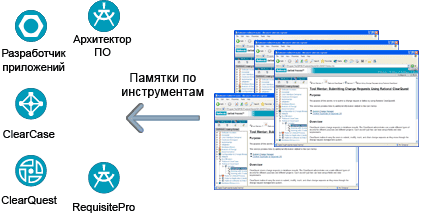

| Руководство по конкретному инструменту |
 |
|
Основное описание
 Менторы инструментов предоставляют связь между Rational Unified Process и другими инструментами Rational Для уменьшения времени на обучение и начало работы Rational Unified Process (RUP) включает набор Менторов инструментов, которые предоставляют пошаговое руководство по использованию определенного инструмента для выполнения задачи. Менторы инструментов предоставляют связь между процессом и инструментами, применяемыми в проектах. Добавление новых инструментов происходит также легко, как и добавление новых менторов, что обеспечивает тесную интеграцию процесса и инструментов. Менторы инструментов предоставляются для большинства Rational. |
© Copyright IBM Corp. 1987, 2006. Все права защищены.. |